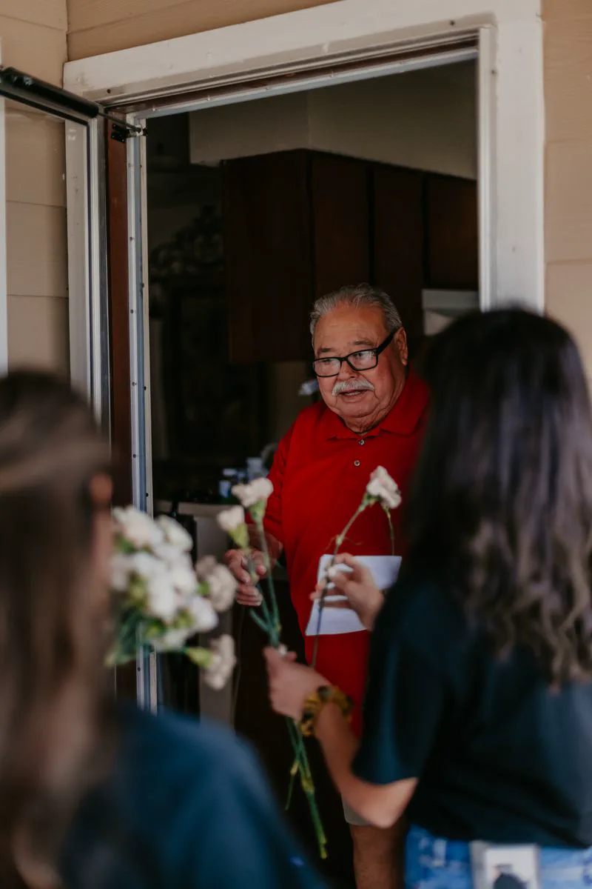
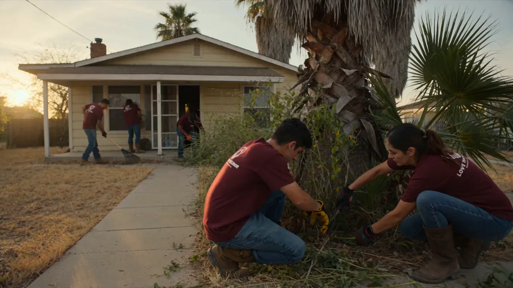
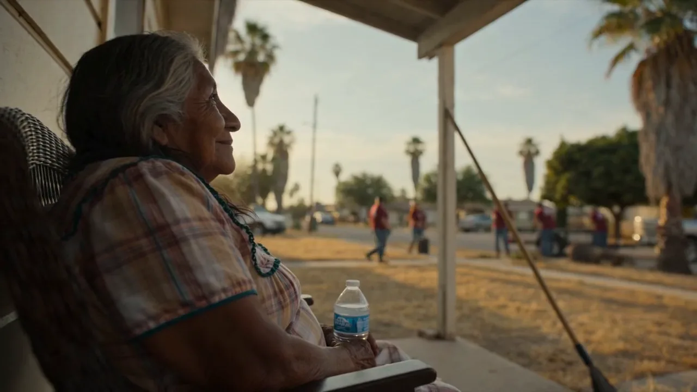
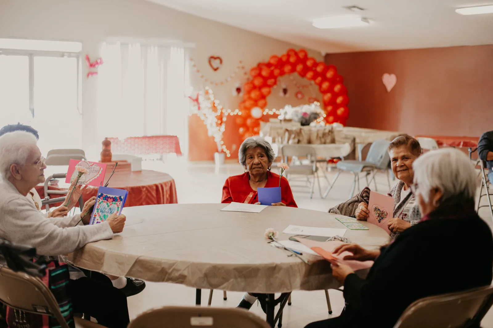
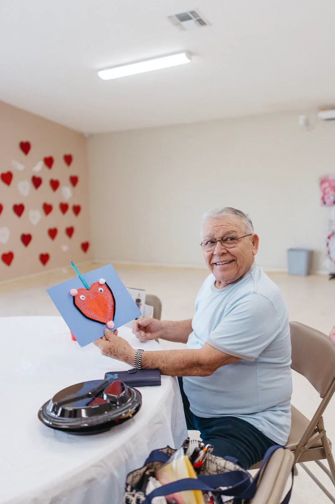
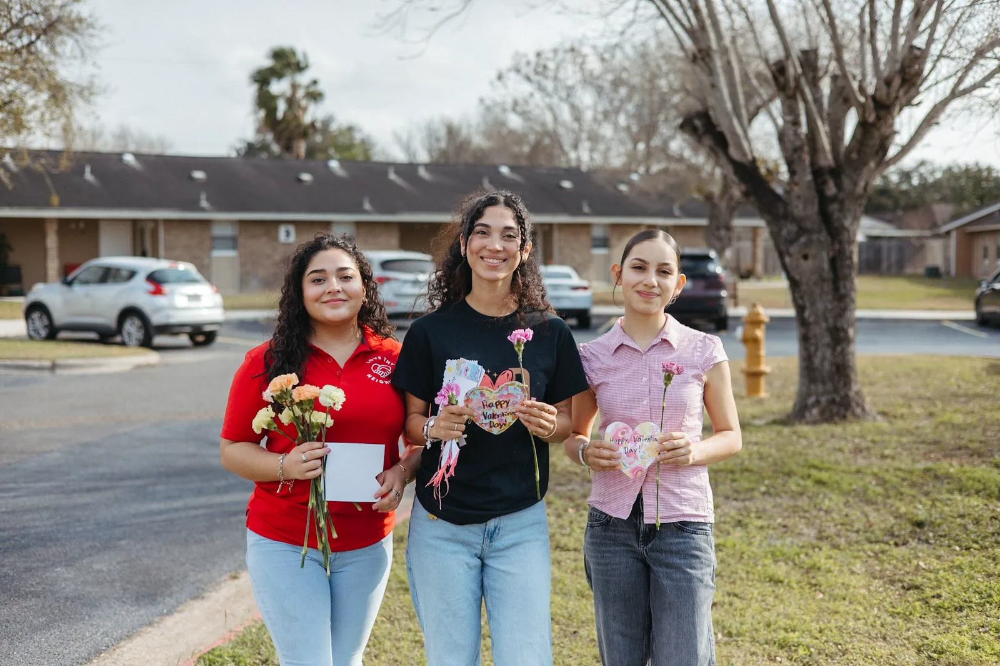

Nobody on this street gets forgotten.
Love Thy Neighbor brings Valley volunteers, churches and businesses together to repair homes and keep our seniors company.
Know a senior who needs a hand? Refer a neighbor
Some of our neighbors have been waiting a long time for a knock at the door.
Many seniors in Cameron County live in homes that have slowly fallen into disrepair: a porch that gives, a yard that got away, a railing that was never put in. Bending down got hard, and then the help stopped coming.
Loneliness is the harder part. In adult day cares, nursing homes and hospice centers across the Valley, there are people who go weeks without a visitor who came only for them.
We are a faith-based nonprofit, and we answer both the same way: by showing up, as neighbors, and coming back.
“True change begins when faith turns into action.”

FILM_TITLE


The Restore crew starts with the yard: the brush, the leaves, the things that pile up once bending down gets hard.
Then someone knocks on the screen door, and the work slows down for a minute.
The repairs are why we come. The porch is why we stay.
Three ways we show up: body, heart and spirit.
-
Home
Restore, Renew & Rebuild
Junk removal, yard cleanups, painting, porch repair and accessibility fixes like ramps and railings, so seniors can live safely and with dignity.
Now in Phase 1 (Restore) in Harlingen, TX. About the program
-
Fellowship
Hearts & Hands Fellowship
Crafts, music, prayer and conversation, brought every month to adult day cares, nursing homes and hospice centers.
Monthly visits across the Valley. About the program

-
Friendship
Adopt-A-Neighbor
Each volunteer is matched with one senior for letters, calls, coffee and care packages, with LTN walking alongside in guidance and prayer.
One volunteer, one senior, monthly contact. About the program

None of it happens alone.
Love Thy Neighbor is run by local volunteers. Churches lend hands, businesses donate supplies and space, and families tell us who needs help. Every gift goes straight to work for a senior in the Valley.

Made possible by
- Amigos del ValleCommunity partner
- The Pursuit ChurchHarlingen
- Jade Candle Co.Local business
- Danny VisualzPhotography & film
- Queen City BarbershopMercedes
- Yeshua by YeseniaHarlingen
- Smile Station PhotoboothRio Grande Valley
- BannerBuzzAdvertising partner
Want your church or business on this list? Become a partner
Know a senior who could use a helping hand?
Tell us about them. Our outreach team reviews every referral and reaches out with care. Everything you share stays confidential. Refer a neighbor